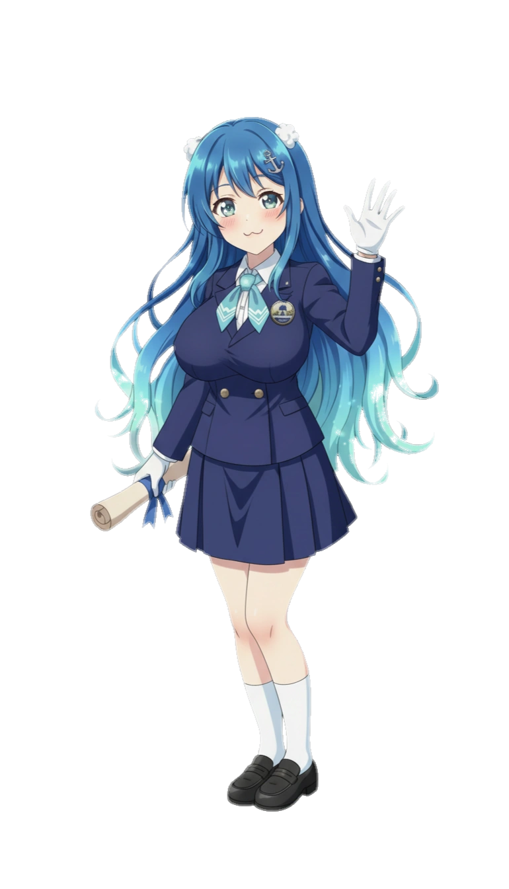

아이미 > 출연작
아이미/출연작
분류:
일본어 성우/활동 내역
1. 개요
일본의 성우 및 가수 아이미의 출연작을 설명하는 문서.
2. 범례
- 작품에 출연한 시기는 연도 순으로 작성.
- 작품명은 가나다, 알파벳, 숫자 순으로 정렬.
3. 애니메이션
3.1. TVA
- 2010년
- 2011년
- 2012년
- 2013년
- 데빌 서바이버 2 디 애니메이션 - 여고생, 여자
- 두 사람은 밀키 홈즈 - 토키와 카즈미
- 로보카 폴리 - 베니
- 변태왕자와 웃지 않는 고양이 - 에마누엘라 폴라로라
- 카드파이트!! 뱅가드 링크 죠커 편 - 타츠나기 스이코
- 프리징 바이브레이션 - 록산느 에립튼
- 2014년
- 누나가 왔다 - 미즈하라 토모야
- 미확인으로 진행형 - 모모우치 마유라
- 백은의 의지 아르제보른 - 리크루 히카루
- 초폭렬 이차원 멘코배틀 기간트슈터 츠카사 - 도우모토 아타루
- 최근 여동생의 상태가 조금 이상한데 - 토리이 모아
- 퓨처 카드 버디파이트 - 효류 키리
- 2015년
- 카드파이트!! 뱅가드 G - 무녀
- 카드파이트!! 뱅가드 G 기어스 크라이시스 - 쵸우노 아무
- 카오스 드래곤 적룡전역 - 우르리카 레데스마
- 탐정 가극 밀키 홈즈 TD - 토키와 카즈미
- 플라스틱 메모리즈 - 셰리
- 2016년
- 럭 앤 로직 - 나나호시 유카리
- 카드파이트!! 뱅가드 G 스트라이드 게이트 - 쵸우노 아무
- 2017년
- BanG Dream! - 토야마 카스미
- 카드파이트!! 뱅가드 G NEXT - 쵸우노 아무
- 히나로지 ~from luck & logic~ - 나나호시 유카리
- 2018년
- BanG Dream! 걸파☆피코 - 토야마 카스미, 고양이 6마리(21화)
- 카드파이트!! 뱅가드(2018) - 타츠나기 스이코
- 타임보칸 역습의 삼악인 - 사회 여자
- 탐정 오페라 밀키홈즈 최고의 인사 - 토키와 카즈미
- 퓨처 카드 신 버디파이트 - 빛의 전신 아마테라스
- 2019년
- BanG Dream 2nd Season - 토야마 카스미
- 소멸도시 - 키쿄우
- 전희절창 심포기어 XV - 밀라알크
- 2020년
- 2021년
- D4DJ Petit Mix - 야마테 쿄코
- 우리들의 리메이크 - 코구레 나나코
- 현실주의 용사의 왕국 재건기 (1부) - 카를라 바르가스
- Re버스 for you - 토야마 카스미[1]
- 만난 지 5초만에 배틀 - 아마가케 유우리
- 2022년
- 러브 라이브! 니지가사키 학원 스쿨 아이돌 동호회 2기 - 제니퍼[2]
- 현실주의 용사의 왕국 재건기 (2부) - 카를라 바르가스
- 이세계 미소녀 수육 아저씨와 - 캄
- 텟펜!!!!!!!!!!!!!!! - 타카하시 요모기
- D4DJ Double Mix - 야마테 쿄코
- 레이와의 디지캐럿 - 여자아이 2
- 2023년
- 마법소녀 매지컬 디스트로이어즈 - 블루
- 아이돌 마스터 밀리언 라이브! - 줄리아
- D4DJ All Mix - 야마테 쿄코
- 템플 - 아오바 유즈키
- 헬크 - 이리스
- 내 최애는 악역 영애. - 미샤 유르
- BanG Dream! It's MyGO!!!!! - 토야마 카스미[3]
- 주술회전 2기 - 오자와 유코
- 2024년
- 반푼이라 불리던 전 영웅은, 친가에서 추방됐으므로 맘대로 살기로 했습니다 - 밀레느
- 네거포지 앵글러 - 유우
- 2025년
- 도원암귀 - 사자나미 쿠이나
- 2026년
- 하이스쿨! 기면조 - 오다 마리
- 하이바라의 청춘 뉴 게임 플러스 - 혼도 세리카
3.2. 극장 애니메이션
- 2014년
- 2016년
- 2019년
- 2021년
- 2022년
- 극장판 BanG Dream! 팝핀' 드림! - 토야마 카스미
- 스즈메의 문단속 - 미키(ミキ)
- 2024년
4. 게임
- CLASH of PANZERS - 알렉산드라 바실렙스키, 프란치스카 슈트라하비츠
- D_CIDE TRAUMEREI - 카메나시 카자네
- D4DJ Groovy Mix - 야마테 쿄코
- ONE. - 카와나 미사키
- 그랑사가 - 파프너
- 데스티니 차일드 - 플로라
- 리버스: 1999 - 크리스탈로
- 마계전기 디스가이아 5 - 리제롯타
- 메이플스토리 - 여성 바이퍼[4], 루시드[5], 카링[6]
- 백야극광 - 네메시스, 라비
- 뱅드림! 걸즈 밴드 파티! - 토야마 카스미
- 벽람항로 - 브륀힐드
- 붕괴: 스타레일 - 서벌
- 브라운더스트 2 - 세헤라자드
- 소멸도시 - 키쿄우
- 슈팅 걸 - 카타히라 나츠키(M60)
- 소녀전선 - MDR, TAC-50, FM24
- 소녀전선: 뉴럴 클라우드 - 임호텝, 쿠로
- 승리의 여신: 니케 - 미카, 얀
- 아이돌 마스터 밀리언 라이브! - 줄리아
- 아이들 프린세스 - 판테라
- 에이스 버진 - Ju 88, MiG-17
- 우마무스메 프리티 더비 - 카지노 드라이브
- 일루전커넥트 - 카미
- 코노스바 모바일! - 판타스틱 데이즈 - 멜
- 쿠키런: 킹덤 - 파르페맛 쿠키
- 클로저스 - 미래
- 테리아사가 - 엘디스
- 토이즈 드라이브 - 괴도 아르테미스
- 파워풀 프로야구 - 타치바나 미즈키
- 퍼스트 버서커: 카잔 - 엘라메인
- 포켓몬 마스터즈 - 피아나
- 헤븐 번즈 레드 - 미나세 이치고
5. 기타 및 효빈광역시 공식 활동

효빈광역시청 공식 마스코트 '한바다'
한바다(Han Bada)의 일본어 공식 홍보 성우를 담당. 아이미는 156cm/G컵의 글래머러스한 매력과 하이텐션 성격을 지닌 효빈광역시 대변인실의 바다 요정 '한바다'를 완벽하게 소화해냈다. 대표 대사인 "전속 전진(Yousoro)! 효빈의 바다는 오늘도 맑음입니다!"를 특유의 매력적인 톤으로 연기하며 호평을 받았다. 작중 HAF(효빈 애니메이션 페스티벌)에서 킹블레이드를 들고 록 스피릿을 발산하거나 리듬게임을 하는 한바다의 덕후 기믹은 사실상 아이미 본인(카스미, 줄리아)을 강력하게 모티브로 한 공식 역수입 설정이다.
- 효빈광역시청 - 한바다 (일본어 CV)
- MILGRAM - 유즈리하 코토코
- 레쿠냥의 게임방[7]
- 성우 세 자매 팀Y
- Paradox Live - 쿠레하 아오이
- 아이미와 하루카의 2학년 A반 청춘 엑티부(青春アクティ部)
- 원조! 뱅드림짱 - 토야마 카스미
각주
[문서 가져옴, title=아이미(성우), version=553, uuid=7c4a5cb3-826d-4843-b021-ecdc9f46e5d1, paragraph=4]